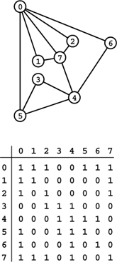

C++ Programming Robert Sedgewick - Princeton University Addison Wesley Professional Algorithms in C++, Parts 1–4: Fundamentals, Data Structure, Sorting, Searching, Third Edition
3.7. Compound Data Structures
Arrays, linked lists, and strings all provide simple ways to structure data sequentially. They provide a first level of abstraction that we can use to group objects in ways amenable to processing the objects efficiently. Having settled on these abstractions, we can use them in a hierarchical fashion to build up more complex structures. We can contemplate arrays of arrays, arrays of lists, arrays of strings, and so forth. In this section, we consider examples of such structures.
In the same way that one-dimensional arrays correspond to vectors, two-dimensional arrays, with two indices, correspond to matrices, and are widely used in mathematical computations. For example, we might use the following code to multiply two matrices a and b, leaving the result in a third matrix c.
for (i = 0; i < N; i++)
for (j = 0; j < N; j++)
c[i][j] = 0.0;
for (i = 0; i < N; i++)
for (j = 0; j < N; j++)
for (k = 0; k < N; k++)
c[i][j] += a[i][k]*b[k][j];
We frequently encounter mathematical computations that are naturally expressed in terms of multidimensional arrays.
Beyond mathematical applications, a familiar way to structure information is to use a table of numbers organized into rows and columns. A table of students' grades in a course might have one row for each student, and one column for each assignment. Such a table would be represented as a two-dimensional array with one index for the row and one for the column. If we were to have 100 students and 10 assignments, we would write grades[100][10] to declare the array, and then refer to the ith student's grade on the jth assignment as grade[i][j]. To compute the average grade on an assignment, we sum together the elements in a column and divide by the number of rows; to compute a particular student's average grade in the course, we sum together the elements in a row and divide by the number of columns, and so forth. Two-dimensional arrays are widely used in applications of this type. On a computer, it is often convenient and straightforward to use more than two dimensions. For example, an instructor might use a third index to keep student-grade tables for a sequence of years.
Two-dimensional arrays are a notational convenience, as the numbers are ultimately stored in the computer memory, which is essentially a one-dimensional array. In many programming environments, two-dimensional arrays are stored in row-major order in a one-dimensional array: In an array a[M][N], the first N positions would be occupied by the first row (elements a[0][0] through a[0][N-1]), the second N positions by the second row (elements a[1][0] through a[1][N-1]), and so forth. With row-major order, the final line in the matrix-multiplication code in the previous paragraph is precisely equivalent to
Program 3.16. Two-dimensional array allocation|
This function dynamically allocates the memory for a two-dimensional array, as an array of arrays. We first allocate an array of pointers, then allocate memory for each row. With this function, the statement
int **a = malloc2d(M, N);
allocates an M-by-N array of integers.
int **malloc2d(int r, int c)
{ int **t = new int*[r];
for (int i = 0; i < r; i++)
t[i] = new int[c];
return t;
}
|
c[N*i+j] = a[N*i+k]*b[N*k+j]
The same scheme generalizes to provide a facility for arrays with more dimensions. In C++, multidimensional arrays may be implemented in a more general manner: we can define them to be compound data structures (arrays of arrays). This provides the flexibility, for example, to have an array of arrays that differ in size.
We saw a method in Program 3.6 for dynamic allocation of arrays that allows us to use our programs for varying problem sizes without recompiling them, and would like to have a similar method for multidimensional arrays. How do we allocate memory for multidimensional arrays whose size we do not know at compile time? That is, we want to be able to refer to an array element such as a[i][j] in a program, but cannot declare it as int a[M][N] (for example) because we do not know the values of M and N. For row-major order, a statement like
int* a = malloc(M*N*sizeof(int));
will allocate an M-by-N array of integers, but this solution will not work in all situations. For example, when an array is passed to a function, only its first dimension can be unspecified at compile time. Program 3.16 gives a more effective solution for two-dimensional arrays, based on their definition as arrays of arrays.
Program 3.17 illustrates the use of a similar compound structure: an array of strings. At first blush, since our abstract notion of a string is an array of characters, we might represent arrays of strings as arrays of arrays. However, the concrete representation that we use for a string is a pointer to the beginning of an array of characters, so an array of strings can also be an array of pointers. As illustrated in Figure 3.12, we then can get the effect of rearranging strings simply by rearranging the pointers in the array. Program 3.17 uses the qsort library function—implementing such functions is the subject of Chapters 6 through 9 in general and of Chapter 7 in particular. This example illustrates a typical scenario for processing strings: we read the characters themselves into a huge one-dimensional array, save pointers to individual strings (delimiting them with string-termination characters), then manipulate the pointers.
When processing strings, we normally work with pointers into a buffer that contains the strings (top), because the pointers are easier to manipulate than the strings themselves, which vary in length. For example, the result of a sort is to rearrange the pointers such that accessing them in order gives the strings in alphabetical (lexico-graphic) order.
We have already encountered another use of arrays of strings: the argv array that is used to pass argument strings to main in C++ programs. The system stores in a string buffer the command line typed by the user and passes to main a pointer to an array of pointers to strings in that buffer. We use conversion functions to calculate numbers corresponding to some arguments; we use other arguments as strings, directly.
Program 3.17. Sorting an array of strings|
This program illustrates an important string-processing function: rearranging a set of strings into sorted order. We read strings into a buffer large enough to hold them all, maintaining a pointer to each string in an array, then rearrange the pointers to put the pointer to the smallest string in the first position in the array, the pointer to the second smallest string in the second position in the array, and so forth.
The qsort library function that actually does the sort takes four arguments: a pointer to the beginning of the array, the number of objects, the size of each object, and a comparison function. It achieves independence from the type of object being sorted by blindly rearranging the blocks of data that represent objects (in this case string pointers) and by using a comparison function that takes pointers to void as argument. This code casts these back to type pointer to pointer to char for strcmp. To actually access the first character in a string for a comparison, we dereference three pointers: one to get the index (which is a pointer) into our array, one to get the pointer to the string (using the index), and one to get the character (using the pointer).
We use a different method to achieve type independence for our sorting and searching functions (see Chapters 4 and 6).
#include <iostream.h>
#include <stdlib.h>
#include <string.h>
int compare(const void *i, const void *j)
{ return strcmp(*(char **)i, *(char **)j); }
int main()
{ const int Nmax = 1000;
const int Mmax = 10000;
char* a[Nmax]; int N;
char buf[Mmax]; int M = 0;
for (N = 0; N < Nmax; N++)
{
a[N] = &buf[M];
if (!(cin >> a[N])) break;
M += strlen(a[N])+1;
}
qsort(a, N, sizeof(char*), compare);
for (int i = 0; i < N; i++)
cout << a[i] << endl;
}
|
We can build compound data structures exclusively with links, as well. Figure 3.13 shows an example of a multilist, where nodes have multiple link fields and belong to independently maintained linked lists. In algorithm design, we often use more than one link to build up complex data structures, but in such a way that they are used to allow us to process them efficiently. For example, a doubly linked list is a multilist that satisfies the constraint that x->l->r and x->r->l are both equal to x. We shall examine a much more important data structure with two links per node in Chapter 5.
We can link together nodes with two link fields in two independent lists, one using one link field, the other using the other link field. Here, the right link field links together nodes in one order (for example, this order could be the order in which the nodes were created) and the left link field links together nodes in a different order (for example, in this case, sorted order, perhaps the result of insertion sort using the left link field only). Following right links from a, we visit the nodes in the order created; following left links from b, we visit the nodes in sorted order.
If a multidimensional matrix is sparse (relatively few of the entries are nonzero), then we might use a multilist rather than a multidimensional array to represent it. We could use one node for each value in the matrix and one link for each dimension, with the link pointing to the next item in that dimension. This arrangement reduces the storage required from the product of the maximum indices in the dimensions to be proportional to the number of nonzero entries, but increases the time required for many algorithms, because they have to traverse links to access individual elements.
To see more examples of compound data structures and to highlight the distinction between indexed and linked data structures, we next consider data structures for representing graphs. A graph is a fundamental combinatorial object that is defined simply as a set of objects (called vertices) and a set of connections among the vertices (called edges). We have already encountered graphs, in the connectivity problem of Chapter 1.
Program 3.18. Adjacency-matrix graph representation|
This program reads a set of edges that define an undirected graph and builds an adjacency-matrix representation for the graph, setting a[i][j] and a[j][i] to 1 if there is an edge from i to j or j to i in the graph, or to 0 if there is no such edge. The program assumes that the number of vertices V is a compile-time constant. Otherwise, it would need to dynamically allocate the array that represents the adjacency matrix (see Exercise 3.71).
#include <iostream.h>
int main()
{ int i, j, adj[V][V];
for (i = 0; i < V; i++)
for (j = 0; j < V; j++)
adj[i][j] = 0;
for (i = 0; i < V; i++) adj[i][i] = 1;
while (cin >> i >> j)
{ adj[i][j] = 1; adj[j][i] = 1; }
}
|
We assume that a graph with V vertices and E edges is defined by a set of E pairs of integers between 0 and V-1. That is, we assume that the vertices are labeled with the integers 0, 1, . . ., V-1, and that the edges are specified as pairs of vertices. As in Chapter 1 we take the pair i-j as defining a connection between i and j and thus having the same meaning as the pair j-i. Graphs that comprise such edges are called undirected graphs. We shall consider other types of graphs in Part 7.
One straightforward method for representing a graph is to use a two-dimensional array, called an adjacency matrix. With an adjacency matrix, we can determine immediately whether or not there is an edge from vertex i to vertex j, just by checking whether row i and column j of the matrix is nonzero. For the undirected graphs that we are considering, if there is an entry in row i and column j, then there also must be an entry in row j and column i, so the matrix is symmetric. Figure 3.14 shows an example of an adjacency matrix for an undirected graph; Program 3.18 shows how we can create an adjacency matrix, given a sequence of edges as input.
A graph is a set of vertices and a set of edges connecting the vertices. For simplicity, we assign indices (nonnegative integers, consecutively, starting at 0) to the vertices. An adjacency matrix is a two-dimensional array where we represent a graph by putting a 1 bit in row i and column j if and only if there is an edge from vertex i to vertex j. The array is symmetric about the diagonal. By convention, we assign 1 bits on the diagonal (each vertex is connected to itself). For example, the sixth row (and the sixth column) says that vertex 6 is connected to vertices 0, 4, and 6.

Another straightforward method for representing a graph is to use an array of linked lists, called adjacency lists. We keep a linked list for each vertex, with a node for each vertex connected to that vertex. For the undirected graphs that we are considering, if there is a node for j in i's list, then there must be a node for i in j's list. Figure 3.15 shows an example of the adjacency-lists representation of an undirected graph; Program 3.19 shows how we can create an adjacency-lists representation of a graph, given a sequence of edges as input.
This representation of the graph in Figure 3.14 uses an array of lists. The space required is proportional to the number of nodes plus the number of edges. To find the indices of the vertices connected to a given vertex i, we look at the ith position in an array, which contains a pointer to a linked list containing one node for each vertex connected to i.
Both graph representations are arrays of simpler data structures—one for each vertex describing the edges incident on that vertex. For an adjacency matrix, the simpler data structure is implemented as an indexed array; for an adjacency list, it is implemented as a linked list.
Thus, we face straightforward space tradeoffs when we represent a graph. The adjacency matrix uses space proportional to V2; the adjacency lists use space proportional to V + E. If there are few edges (such a graph is said to be sparse), then the adjacency-lists representation uses far less space; if most pairs of vertices are connected by edges (such a graph is said to be dense), the adjacency-matrix representation might be preferable, because it involves no links. Some algorithms will be more efficient with the adjacency-matrix representation, because it allows the question "is there an edge between vertex i and vertex j?" to be answered in constant time; other algorithms will be more efficient with the adjacency-lists representation, because it allows us to process all the edges in a graph in time proportional to V + E, rather than to V2. We see a specific example of this tradeoff in Section 5.8.
Program 3.19. Adjacency-lists graph representation|
This program reads a set of edges that define a graph and builds an adjacency-matrix representation for the graph. An adjacency list for a graph is an array of lists, one for each vertex, where the jth list contains a linked list of the nodes connected to the jth vertex.
#include <iostream.h>
struct node
{ int v; node* next;
node(int x, node* t)
{ v = x; next = t; }
};
typedef node *link;
int main()
{ int i, j; link adj[V];
for (i = 0; i < V; i++) adj[i] = 0;
while (cin >> i >> j)
{
adj[j] = new node(i, adj[j]);
adj[i] = new node(j, adj[i]);
}
}
|
Both the adjacency-matrix and the adjacency-lists graph representations can be extended straightforwardly to handle other types of graphs (see, for example, Exercise 3.70). They serve as the basis for most of the graph-processing algorithms that we shall consider in Part 7.
To conclude this chapter, we consider an example that shows the use of compound data structures to provide an efficient solution to the simple geometric problem that we considered in Section 3.2. Given d, we want to know how many pairs from a set of N points in the unit square can be connected by a straight line of length less than d. Program 3.20 uses a two-dimensional array of linked lists to improve the running time of Program 3.8 by a factor of about 1/d2 when N is sufficiently large. It divides the unit square up into a grid of equal-sized smaller squares. Then, for each square, it builds a linked list of all the points that fall into that square. The two-dimensional array provides the capability to access immediately the set of points close to a given point; the linked lists provide the flexibility to store the points where they may fall without our having to know ahead of time how many points fall into each grid square.
The space used by Program 3.20 is proportional to 1/d2 + N, but the running time is O(d2N2), which is a substantial improvement over the brute-force algorithm of Program 3.8 for small d. For example, with N = 106 and d = 0.001, we can solve the problem in time and space that is effectively linear, whereas the brute-force algorithm would require a prohibitive amount of time. We can use this data structure as the basis for solving many other geometric problems, as well. For example, combined with a union-find algorithm from Chapter 1, it gives a near-linear algorithm for determining whether a set of N random points in the plane can be connected together with lines of length d—a fundamental problem of interest in networking and circuit design.
As suggested by the examples that we have seen in this section, there is no end to the level of complexity that we can build up from the basic abstract constructs that we can use to structure data of differing types into objects and sequence the objects into compound objects, either implicitly or with explicit links. These examples still leave us one step away from full generality in structuring data, as we shall see in Chapter 5. Before taking that step, however, we shall consider the important abstract data structures that we can build with linked lists and arrays—basic tools that will help us in developing the next level of generality.
Exercises | 3.62 Write a version of Program 3.16 that handles three-dimensional arrays. | | 3.63 Modify Program 3.17 to process input strings individually (allocate memory for each string after reading it from the input). You can assume that all strings have less than 100 characters. | | 3.64 Write a program to fill in a two-dimensional array of 0–1 values by setting a[i][j] to 1 if the greatest common divisor of i and j is 1, and to 0 otherwise. | | 3.65 Use Program 3.20 in conjunction with Program 1.4 to develop an efficient program that can determine whether a set of N points can be connected with edges of length less than d.
Program 3.20. A two-dimensional array of lists|
This program illustrates the effectiveness of proper data-structure choice, for the geometric computation of Program 3.8. It divides the unit square into a grid, and maintains a two-dimensional array of linked lists, with one list corresponding to each grid square. The grid is chosen to be sufficiently fine that all points within distance d of any given point are either in the same grid square or an adjacent one. The function malloc2d is like the one in Program 3.16, but for objects of type linkinstead of int.
#include <math.h>
#include <iostream.h>
#include <stdlib.h>
#include "Point.h"
struct node
{ point p; node *next;
node(point pt, node* t) { p = pt; next = t; } };
typedef node *link;
static link **grid;
static int G, cnt = 0; static float d;
void gridinsert(float x, float y)
{ int X = x*G+1; int Y = y*G+1;
point p; p.x = x; p.y = y;
link s, t = new node(p, grid[X][Y]);
for (int i = X-1; i <= X+1; i++)
for (int j = Y-1; j <= Y+1; j++)
for (s = grid[i][j]; s != 0; s = s->next)
if (distance(s->p, t->p) < d) cnt++;
grid[X][Y] = t;
}
int main(int argc, char *argv[])
{ int i, N = atoi(argv[1]);
d = atof(argv[2]); G = 1[/]d;
grid = malloc2d(G+2, G+2);
for (i = 0; i < G+2; i++)
for (int j = 0; j < G+2; j++)
grid[i][j] = 0;
for (i = 0; i < N; i++)
gridinsert(randFloat(), randFloat());
cout << cnt << " pairs within " << d << endl;
}
|
| | | | 3.66 Write a program to convert a sparse matrix from a two-dimensional array to a multilist with nodes for only nonzero values. | |  3.67 Implement matrix multiplication for matrices represented with multi-lists. 3.67 Implement matrix multiplication for matrices represented with multi-lists.
| |  3.68 Show the adjacency matrix that is built by Program 3.18 given the input pairs 0-2, 1-4, 2-5, 3-6, 0-4, 6-0, and 1-3. 3.68 Show the adjacency matrix that is built by Program 3.18 given the input pairs 0-2, 1-4, 2-5, 3-6, 0-4, 6-0, and 1-3.
| | 3.69 Show the adjacency lists that are built by Program 3.19 given the input pairs 0-2, 1-4, 2-5, 3-6, 0-4, 6-0, and 1-3. | |  3.70 A directed graph is one where vertex connections have orientations: edges go from one vertex to another. Do Exercises 3.68 and 3.69 under the assumption that the input pairs represent a directed graph, with i-j signifying that there is an edge from i to j. Also, draw the graph, using arrows to indicate edge orientations. 3.70 A directed graph is one where vertex connections have orientations: edges go from one vertex to another. Do Exercises 3.68 and 3.69 under the assumption that the input pairs represent a directed graph, with i-j signifying that there is an edge from i to j. Also, draw the graph, using arrows to indicate edge orientations.
| | 3.71 Modify Program 3.18 to take the number of vertices as a command-line argument, then dynamically allocate the adjacency matrix. | | 3.72 Modify Program 3.19 to take the number of vertices as a command-line argument, then dynamically allocate the array of lists. | | 3.73 Write a function that uses the adjacency matrix of a graph to calculate, given vertices a and b, the number of vertices c with the property that there is an edge from a to c and from c to b. | | 3.74 Answer Exercise 3.73, but use adjacency lists. |
|